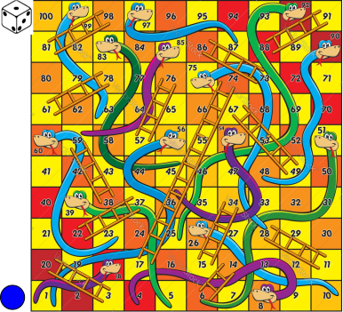
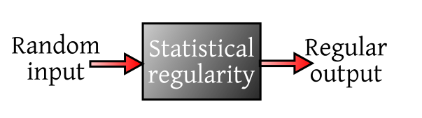
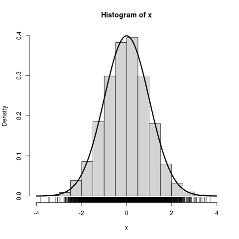
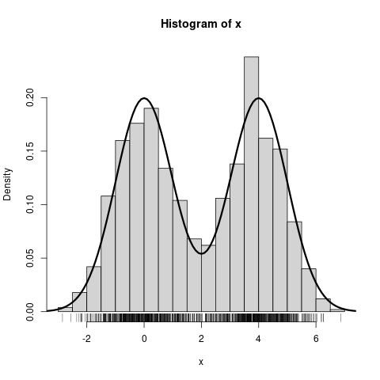
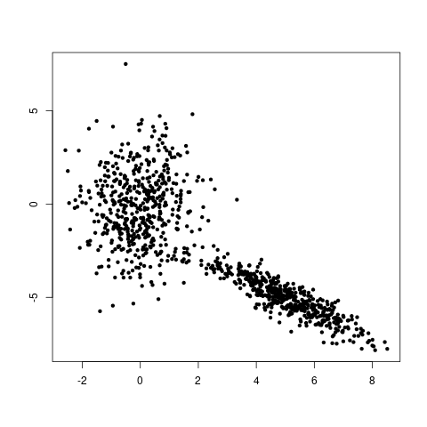
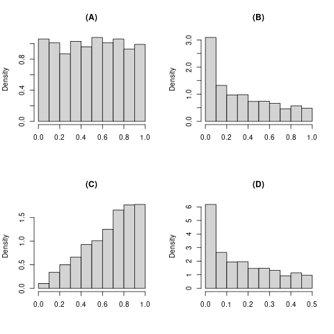
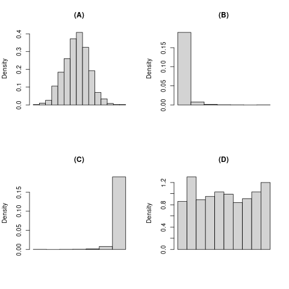

If you toss a coin, you can't be sure whether it will show head or tail. But how can that be true? After all, the coin is
governed by the laws of physics. So if you know its initial
position, the force of the toss, friction of the air,
etc etc,
then you should know exactly what is going to
happen! That's what physics tells you. But the truth is that
in reality we do not have all those pieces of
information.
A magician-turned-mathematician named Persi Diaconis has so much control on
his fingers, that he can toss a coin and make it come up whichever way he
likes! Even a mechanical coin
tossing machine has been designed that can toss a coin in a controlled manner resulting in any desired
outcome!
So we say that the outcome of the coin toss
is random. The adjective random actually is not a property
of the outcome, it is about our ignorance behind
the procedure generating it.
Probability theory is the branch of science dealing with
randomness. Just as biology is the branch of science dealing with
living forms, and chemistry is the branch dealing with materials
things are made of.
But there is a great conceptual difference between probability theory and traditional
branches of science like biology and chemistry. The
aims of those branches are clear even to a layman. But what
exactly do we mean when we say "probability theory is the study of randomness"? The
answer is not at all obvious!
Let's play a game of Ludo to arrive at the answer.
A typical components of a Ludo game look like this:

A board, a die, a counter, and some rules
The Ludo we are going to play also has the same components, but is more sophisticated.
The board will be the entire
${\mathbb R}^2,$ and the counter will be a single point, which is
initially at $(X,Y)=(0,0).$
The die will be 4-faced, carrying the numbers 1 to 4.
Accordingly, there are 4 rules of motion. The outcome of the die roll will determine which rule will apply at each step.
The rules are:
These are all formulae to compute the new position, $(X_{new},Y_{new})$ from the old position
$(X_{old},Y_{old})$ of the counter.
The game proceeds like this:
The counter starts at $(X,Y)=(0,0).$
At each step the 4-faced die is rolled and the corresponding rule is applied to find the new position of the counter.
The new counter position is marked with a dot after each step.
Thus, after you have played this game for, say, 10000 times, you
have as many dots on the paper. What will all these dots together look like? A
random jumble? A circle? A line? or what?
Make a guess and then check it by actually playing this game.
You'll be surprised by the outcome. Somehow all the randomness
has vanished, and a very regular pattern has emerged!
How? Will this always happen? What if I change those formulae?
These are the questions that probability theory wants to answer.
This "regular pattern born out of randomness" phenomenon
is called Statistical Regularity.
The patterns born out of statistical regularity are different from deterministic patterns in
the sense that they are rarely exactly replicated. They is extremely
similar, but not the same. We see this all around us. Our finger
prints or the leaves on a tree furnish real life examples. Statistical
regularity is like a mysterious black box which takes random
unpredictable input and somehow digests the randomness to produce
regular output.

Statistical regularity as a blackbox
Why do we care about statistical regularity? Firstly, because it is intriguing. Secondly, if we can
master this technique, then it
should help us to build robust systems that do not suffer much from randomness of inputs.
The quite regular profit of a Casino or an insurance
company is a familiar example.
Statistical regularity takes many forms, some
more dramatic, some less. The simplest occurrence of the
phenomenon was observed long back by gamblers: If you toss a coin a large number of times, the
running proportion of heads gradually stabilises. It was first
proved mathematically by Jakob
Bernoulli in 1713. We shall learn it in this course. He discovered the theorem and its rather short proof
"after having meditated on it for twenty years"!
Try it out with a computer/phone.
Behind every occurence of statistical regularity we have a random experiment, which we need to
repeat a large number of times independently.
Unfortunately, even a simple random experiment like a coin
toss is difficult to be repeated many times by hand. So one prefers to
use a computer to carry out a random experiment. Most computer languages and softwares have
provision to program a random experiment. We shall use a software
called R, which is particularly suited for this
purpose. Also, it is free and easy to install. You can even run
it on the cloud from your smart phone without installing
anything!
To draw a Simple Random Sample Without Replacement (SRSWOR) of size 5 from the
population $\{1,2,...,10\}$ you use
sample(10,5)
To draw Simple Random Sample With Replacement (SRSWR) of size $10$ from the population
$\{1,2,...,6\}$ use
sample(6,1,replace=TRUE)
or, in short,
sample(6,1,rep=T)
Before you use the short form, just make sure you do not have a variable called T somewhere already. SRSWR may be
used to toss coins (population of size 2) or roll dice (population of size 6). You may toss a biased coin with $P(head)=0.4$
independently 10 times by
sample(2,10,rep=T,prob=c(0.4,0.6))
Here the populaton is $\{1,2\},$ and we interpret $1$ as head. If you want make the population {head,tail},
then use
sample(c('Head','Tail'),10,rep=T,prob=c(0.4,0.6))
To generate data from some standard distribution, R provides a function starting with r
followed by an abbreviated name of the distribution. For instance to generate a random sample of
size 1000 from $N(0,2^2)$ distribution we use
rnorm(1000,mean=0,sd=2)
Other r-functions include rbinom, rpois, rexpo, runifrcauchy etc.
Let write some R code to see statistical regularity at work. We shall simulate the coin toss example done in class:
Tossing a coin a large number of times, and plotting the cumulative proportion of
heads.
If the first 5 outcomes are H, T, T, H, H, then the cumulative
proportions are $1,\frac 12,\frac 13,\frac 24,\frac 35.$ It is
always (no. of H's so far)/(no. of tosses so far). We shall plot
these five proportions against (no. of tosses so far). The R
command is
Here outcomes == "H" checks which outcomes
are "H" and creates an array of 1 (yes) and 0 (no).
cumsum finds cumultative sums.
1:1000 is just the array 1,2,...,1000.
plot makes a plot. The type="l"
tells it to make a line plot.
Notice how the line (which is random) jumps around a lot
initially, but eventually stabilises and seems to approach a
fixed value. Run the same code a number of times to see how the
initial part changes drastically from run to run, but the final
stable section remains unperturbed.
The following problems will help you to enjoy the course
better. However, no coding problem will be asked in the exams.
Simulate a Europian Roullette wheel. It is wheel with the
numbers 0,1,...,38 written along the circumference. The wheel is
spun and a ball is dropped on it. When the wheel stops spinning, the
ball is at one of the numbers randomly.
Roll a fair die 5000 times. Make a line plot showing the
running proportions of 6.
Suggest how you can shuffle a deck of 52 cards using R.
A slot machine consists of three reels (rings showing the
numbers 0,1,...,9). When it is activated by pulling a handle the
reels start turning randomly in different/same directions and
stop at random positions. One digit of each reel is visible
through a window. Simulate this in R.
The first topic in Probability II is transformation of multivariate densities. For this, it would help to be able to visualise
both univariate and multivariate densities. This is closely relate to statistical regularity.
We shall explore this
visually in the 1D and 2D
cases.
A random variable is a real valued function defined on a probability
space $(\Omega, \calF, P). $ You can think of the probability space as a mathematical
description of a random experiment.
Thus, any random variable has a random experiment
behind it.
Every time we carry out the random experiment, we get a
random $\omega\in\Omega$ as our output, based on which compute one value $X(\omega)$ of our random variable.
If we carry out that random
experiment independently a
large number of times, we shall get many values of that random
variable. If we make a histogram of all those values, then the shape of that histogram
approaches a particular graph. This limiting graph is called the density of the random variable.
We show two examples.

An example with a single peak (unimodal)

An example with two peaks (bimodal)
The generated points themselves are shown below the histogram. Notice how they crowd together where the density peaks up.
This is the reason why a density is a called
"density".
A 2D random variable (also called a 2D random vector) is just
an ordered pair, $(X,Y)$, of two 1D random variables, $X$ and $Y$. The two
random variables are jointly distributed, i.e., they are both
defined on the same probability space, $(\Omega, \calF, P).$ Recall that the probability
space is just a random experiment. When
we run that experiment,
we get some outcome $\omega\in \Omega.$ Based on that same $\omega$ we compute
$X(\omega)$ and $Y(\omega).$ So each time you
run the experiment, you get a point, $(X(\omega),Y(\omega))$, that you can plot on a graph
paper. When we run the experiment a large number of times
independently, you get a spray of points. As before, the density
of the spray may be different at different parts of
the $xy$-plane. This varying level of concentration is
captured by the (joint) density of $(X,Y).$
For instance when we generate data from the density below:

Observe how the random points crowd more densely near the peaks.
EXERCISE 1: I have a random sample of size 1000 from the $Unif(0,1)$ distribution. If I square all
the numbers in my sample then which of the following is most likely to be shape of the resulting histogram?

EXERCISE 2: Sppose that we collect data on the monthly income of all Indians, and make a histogram of the
resulting data. Which of the following shapes would you expect?

EXERCISE 3: Consider the joint density
$$f(x,y) = \left\{\begin{array}{ll}9x^2y^2&\text{if }0\leq x,y\leq 1\\ 0&\text{otherwise.}\end{array}\right..$$
If we generate data from it, which of the following scatterplots would the data most likely correspond to?